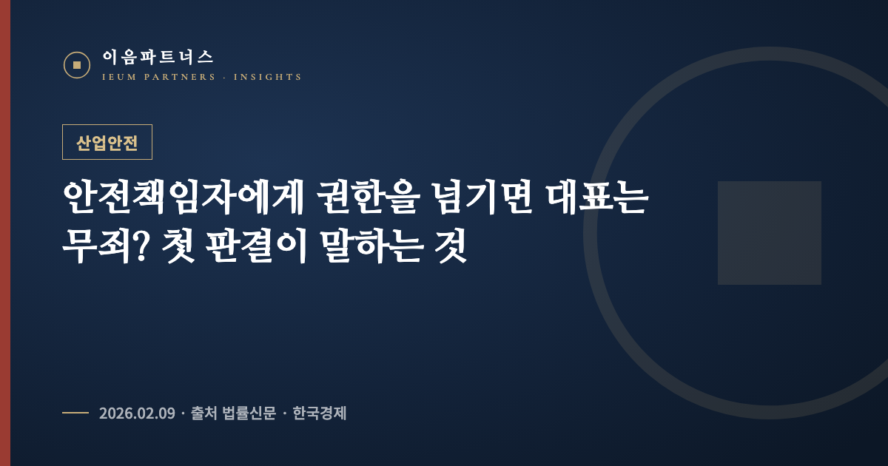

안전책임자에게 권한을 넘기면 대표는 무죄? 첫 판결이 말하는 것

중대재해가 나면 대표이사가 처벌받는다는 것이 지금까지의 일반적인 이해였습니다. 그런데 2025년 12월, 대표이사가 아니라 안전보건최고책임자(CSO, 회사의 안전·보건 업무를 총괄하는 임원)를 법상 경영책임자로 보고 대표에게 무죄를 선고한 첫 판결이 나왔습니다. 이 글에서는 판결 내용과 법원이 본 조건, 오해하기 쉬운 점을 정리합니다.
이 판결은 CSO를 두기만 하면 대표가 안전하다는 뜻이 아닙니다. 법원이 본 것은 직함이 아니라 실제 권한과 전문성이었고, 아직 1심이라 상급심 판단도 지켜봐야 합니다. 우리 회사 안전 조직과 결재 구조를 점검해 보고 싶으시다면 카카오톡 채널 이음파트너스로 편하게 물어 주세요.
어떤 사건이었나
사고는 2023년 3월 21일 경기 이천의 한 창고 신축 공사 현장에서 일어났습니다. 하청 근로자가 고소작업대(사람을 태우고 높이 올라가는 작업 장비)를 타고 이동하다 구조물과 작업대 난간 사이에 머리가 끼어 숨졌습니다.
검찰은 원청 대표이사가 반기마다 한 번 이상 현장 안전보건총괄책임자의 업무를 평가·관리하고, 협력업체 선정이 안전 기준에 맞는지 점검해야 하는데 이를 하지 않았다며 기소했습니다. 수원지방법원 여주지원은 2025년 12월 19일 대표이사에게 무죄를 선고했습니다(법률신문).
법원은 왜 CSO를 경영책임자로 봤나
중대재해처벌법은 경영책임자를 사업을 대표하고 총괄하는 사람 또는 이에 준하여 안전보건 업무를 담당하는 사람으로 정합니다. 법원은 여기서 ‘또는’의 뜻이 “중첩적인 것이 아니라 선택적인 것으로 해석되는 것이 타당하다”고 봤습니다(법률신문). CSO가 안전보건에 관해 사업을 총괄하는 수준의 권한과 책임을 가졌다면 그가 경영책임자라는 것입니다.
| 구분 | 내용 |
|---|---|
| 안전 조직 | 2022년 안전·보건 전담 부서를 새로 만들고 관련 업무를 모두 넘김 |
| 전문성 | 대표의 건설 경력은 짧고, CSO는 30년 건설 경력 |
| 지위 | CSO가 사내이사, 즉 임원 |
| 권한 | CSO가 안전·보건 업무에 실제 전결권(최종 결재 권한)을 행사 |
특히 검찰이 문제 삼은 두 가지 점검 업무에 대해서도 CSO에게 전결권이 있었다는 점이 분명했습니다. 함께 기소된 CSO에게는 징역 1년에 집행유예 2년이 선고됐습니다(한국경제). 책임이 사라진 것이 아니라 실제 권한을 가진 사람에게 옮겨 간 셈입니다.
오해하기 쉬운 점
법원은 단서도 달았습니다. CSO가 대부분의 안전 업무를 결정하더라도, 문제가 된 사고와 관련된 사안에서 대표가 최종 결정을 했다면 대표가 여전히 경영책임자로 처벌받을 수 있다는 것입니다. 이름만 CSO를 두고 중요한 결정은 대표가 하는 구조라면 이 판결의 논리가 적용되기 어렵습니다.
또 이런 판단은 이번이 처음이고, 한국경제 보도에 따르면 양측이 모두 항소해 사건은 2심으로 넘어갔습니다. 상급 법원의 판단이 나오기 전까지는 일반 원칙으로 받아들이기 어렵습니다.
대표님이 지금 확인할 것
- 안전보건 업무를 맡은 사람이 실제 결재 권한과 예산 권한을 갖고 있고, 규정과 결재 기록으로 남아 있는지
- 협력업체 선정이나 안전 예산처럼 사고와 직결되는 결정을 실제로 누가 내리고 있는지
- 안전 책임자의 전문성과 회사 안 지위가 그 권한에 맞는지
작은 회사라면 별도 임원을 두기 어려운 경우가 많습니다. 이 판결을 대표 면책의 방법으로 보기보다, 안전 업무의 권한과 책임을 분명히 나누는 계기로 삼는 편이 현실적입니다.
참고한 자료
- 중대재해처벌법 위반사건에서 대표이사가 아닌 안전보건최고책임자(CSO)를 경영책임자로 보아 대표이사에게 무죄를 선고한 첫 판결 — 법률신문 (2026.02.09)
- 안전업무 위임한 CEO, 중대재해 책임 없다 — 한국경제 (2026.02.23)
우리 회사 규모에 맞는 안전 조직과 결재 구조가 궁금하시다면 카카오톡 채널 이음파트너스에서 함께 정리해 보실 수 있습니다.
※ 이 글은 일반적인 정보 제공을 위한 것으로, 개별 사안은 세무사·노무사 등 전문가와 함께 확인하시기 바랍니다.